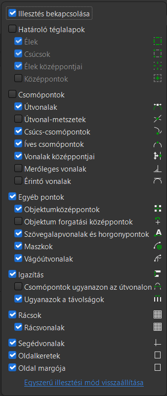

Ebben a leírásban az Inkscape halmazműveleteivel fogsz megismerkedni. Mivel az Inkscape vektorgrafikus program, matematikai műveletekkel írja le az alakzatokat. Mint ilyen, a halmazokat is ismeri, és tud azokkal műveleteket is végezni. A gyakorlatban ezt úgy látjuk, hogy több alakzatból elkészíthetünk egy kombináltat úgy, hogy egyeseket összevonunk, másokat pedig kivonunk.
Hasonlóképpen azt is meg tudja csinálni a matematikai leírások segítségével, hogy egymáshoz igazítja vagy arányosan osztja el az alakzatokat. Ha a koordinátarendszerben gondolkodsz, akkor ezt könnyű elképzelni: például ugyanarra kell állítani a kijelölt alakzatok x1 koordinátáit.
Ebben a leckében ezekkel a műveletekkel készítünk egy mackófejet közösen.
Halmazműveletek elvégzése, a mackófej kontúrja
Alakzatok beillesztése, méretezése és igazítása
Egy segédvonal segítségével elkészítjük a mackófej kontúrját: a fejet és a két fület.
Segédvonal beszúrása: válaszd a Toll eszközt (), kattints a lap felső részének közepén valahová egyszer! Amíg nyomva tartod a ctrl gombot, addig csak 15°-onként tudod elforgatni a szakaszt, amit rajzolsz. Így könnyen tudsz pontosan függőleges vonalat rajzolni. Kattints valahol a lap alsó részén, hogy egy függőleges vonalat kapj! Amikor két pontod van a szakaszon, nyomd meg az Enter-t! Ha nem látod a vonalat, akkor a Shift nyomva tartása mellett kattints valamelyik színre, hogy adj neki körvonalszínt!
A fej beszúrása: válaszd az Ellipszis és körív eszközt ()! A ctrl-t nyomva tartva tudsz rajzolni szabályos kört. Rajzolj egy nagyot, kb. 50-60 mm-es sugarút!
Illesztések beállítása és a fej illesztése a segédvonalhoz: az ablak jobb felső részén keresd az Illesztés () gombot! Ha nem kék a háttere (vagyis nem aktív), akkor egyszer kattints rá! Kattints utána a jobb oldalán levő nyílhegyre! A megjelenő menüben
Az egyik fül beszúrása és elhelyezése:
A másik fül beszúrása és elhelyezése:

A mackófej egyesítése, a segédvonal kitörlése
Kitöröljük a segédvonalat, megszüntetjük a mackófej és a fülek közti kontúrvonalat úgy, hogy egyesítjük a fejet és a két fület egy halmazművelettel. Egy későbbi művelethez előregondolva másolatot készítünk a fejről, amelyet egyelőre úgy hagyunk, ahogy létrejött.
A segédvonal kitörlése és a másolat létrehozása:
A három megmaradt alakzat egyesítése egyszerű halmazművelettel:
Alakzatok igazítása, a mackófej részletei
A mackó orrának és szájának elkészítése
Először külön megrajzoljuk a mackó száját és orrát, majd elhelyezzük a fej középvonalában.
Orr rajzolása:
Száj rajzolása:
Orr és száj csoportosítása:
Orr és száj elhelyezése a fej középvonalában:
A mackó szemeinek elkészítése
Elkészítjük a mackó szemeit. Egyet készítünk el teljesen nulláról, a másikat másolatként hozzuk majd létre, és egy kicsit alakítunk rajta. Ezután elhelyezzük őket a középvonaltól azonos távolságra, vízszintesen egy vonalban.
A szem kontúrjának megrajzolása:
A pupilla megrajzolása:
A második szem elkészítése és a két szem függőleges elhelyezkedése:
A szemek elhelyezése a fejen:
A mackófej színezése, a fülek részletei
Beszínezzük a fejet (ha eddig nem megfelelő színű volt), és a fül belsejéhez egy rózsaszín részt adunk. Ebben a lépésben lesz szükség a 6. lépésben elkészített másolatokra. Ha nincsenek ilyenjeid, akkor készíts most egy akkora kört, mint a mackófej, és helyezd el ugyanoda, ahol a fej is van!
A fül belsejének elkészítése halmazművelettel:
A fül belsejének és a mackófejnek a kiszínezése:
Halmazműveletek elvégzése, szöveg kivágása színes háttérből
Háttér készítése és szöveg kivágása
Készítünk egy hátteret a teljes rajznak. A háttér kitöltéséhez valamilyen sötét színt választunk, hogy jól látszódjon, ha ebből kivágunk egy részt.
Háttéralakzat készítése és kitöltése:
Szöveg készítése:
Útvonal készítése, majd a szöveg illesztése:
A szöveg elhelyezése, az útvonal elrejtése és a szöveg kivágása a háttérből:
Ha mindennel készen vagy, akkor mentsd el a munkádat. Fontos, hogy A sima mentés egy Inkscape svg-fájlt hoz létre, amelyet sok helyen nem tudsz felahsználni (pl. TikTok, Insta stb.). Ahhoz, hogy mindenhol működjön, a képet exportálni kell valami olyan formátumban, amit ezek a felületek és a legtöbb gyakori program is tud kezelni. Egy ilyen formátum a png, ami azért is jó, mert az átlátszóságot (alfa-csatorna) is értelmezi, így a kivágott betűk is jól jelennek majd meg.